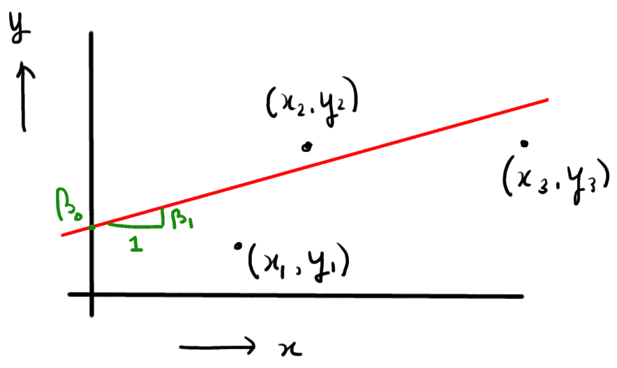

11 Helping others
Part of our job is helping others understand what we are doing. In my experience, we can use three different communication languages and different combinations of them are useful by others, given that everyone is different. These languages are:
- written text/words
- drawings and graphs
- math equations
11.1 Linear regression example
For example, if we have a linear regression
\[ Y = \beta_0 + \beta_1 X + \epsilon \]
with
\[ \epsilon \sim N(0, \sigma^2) \]
and we want to explain the meaning of the coefficient \(\beta_1\) then we can explain it as:
- Text: \(\beta_1\) is the average change in our outcome \(Y\) for a one unit increase in our explanatory variable \(X\)
- The language here is quite precise and it can be hard to understand the implications of every word. This is the typical starting point for many questions: what does this mean?
- Drawings:  image source
- We have three data points (\(x_1\), \(y_1\)), (\(x_2\), \(y_2\)) and (\(x_3\), \(y_3\)) and we draw a line that shows the relationship between our \(X\) and \(Y\) variables (each on its own axis).
- This line that we have drawn (shown in red) has two components that can be summarized by a small triangle (shown in green).
- The triangle has one vertex that touches the Y axis, this is the intercept, also known as \(\beta_0\). Then it has a side of length 1 on the x-axis, and \(\beta_1\) is length of the vertical side of the triangle that starts at \(Y = \beta_0\) and ends at our diagonal line. That is, \(\beta_1\) is the height of the green triangle when the length is equal to 1 on the x-axis.
- This visual representation can be useful for understanding the words we started off with.
- Math:
- First, notice that our linear model is \(E[Y] = \beta_0 + \beta_1 X\), then we provide two values for \(X\): little \(x\) and little \(x\) plus one, and compute the difference between them. That leads to the following equations (show further below).
- It can be very useful here to explain how the math on that first equation translates to the written text we started off with.
\[ E [Y | X = x + 1] - E[Y | X = x] \] \[ = ( \beta_0 + \beta_1 (x + 1) ) - (\beta_0 + \beta_1 x ) \] \[ = \beta_0 + \beta_1 x + \beta_1 - \beta_0 - \beta_1 x \] \[ = (\beta_0 - \beta_0) + (\beta_1 x - \beta_1 x) + \beta_1 \] \[ = \beta_1 \]
11.2 DSgs guides
As DSgs-guides for the Data Science guidance sessions (DSgs), our role involves:
- Explaining a concept creatively. For example, the person asking the question might have been confused by a lecture or the documentation of a function, and we have to explain those written words using a combination of: other words, drawings, and/or math.
- Google searching. We might be more familiar with some useful keywords that can lead us to a more precise answer, or given our experience we might be able to tease apart faster possible answers from say a help forum to identify the answer that best matches our scenario.
- Providing ideas. If some code is not working, we can provide ideas on how to troubleshoot that problem as well as identify potential key components of an error message. For a given analysis path, we can also provide options on what routes to take including potential useful graphs to create.
- Baseline platform. We can help others get used to our baseline platform of tools we use. Hence why we go through the bootcamps to have a common knowledgebase and set of courses, workshops and books that we refer others to.
We can also be a bouncing board for others to discuss their ideas, and sometimes help with our feedback.
11.2.1 DSgs-guide training
Accomplishing our role as DSgs-guides can be a bit scary since others will expect us to know the answers to many different questions. They might also be under intense pressure and might try to offload some of that pressure on to us. In other words, human interactions are complex. To deal with this, we have defined a set of Interaction rules to protect us. But we also need some training.
First of all, remember that it’s OK to not know the answer. Simply communicate that you don’t know the answer instead of trying to hide it. You can then:
- search for an answer prior to your next DSgs session with the person asking the question
- bring that question up during our DSgs: feedback weekly session
- request that someone else take over the question 6
Remember that some questions are very challenging! After all, at LIBD we are trying to answer complicated biological questions that no one has an answer to.
During my time as a Teaching Assistant at JHBSPH: Biostatistics, we had an activity called the Teaching Assistant Training Day, which I have adapted for our purpose. This involves:
I recommend also reading the following papers:
- Irwin D. J. Bross (1974) The Role of the Statistician: Scientist or Shoe Clerk, The American Statistician, 28:4, 126-127, DOI: 10.1080/00031305.1974.10479092
- Lurie, William. “THE IMPERTINENT QUESTIONER: THE SCIENTIST’S GUIDE TO THE STATISTICIAN’S MIND.” American Scientist, vol. 46, no. 1, 1958, pp. 57–61. JSTOR, jstor.org/stable/27827055.
- Finney, D.J. (1982), The questioning statistician. Statist. Med., 1: 5-13. doi: 10.1002/sim.4780010103
11.2.2 Common responses
11.2.3 Internal sessions log
In order to make our job easier the next time we get a similar question, we have an internal sessions log where we record:
- the question we got asked
- the links we referred anyone to or that we used during the session
- example code we used
This log also helps us refresh our memory so we can remember what are the links we’ve told someone else to use and see their trajectory. The sessions log also enables DSgs-guides to learn from each other. The internal sessions log is then used to populate the content of the DSgs_logs website.
It’s best to fill out an entry on the sessions log immediately after a session. That way your memory is fresh. That’s why we recommend planning for 10 minutes after a session to fill out your entry in the log and to send a message with the links from the session to the person who requested it 7
11.2.4 Getting started
If you just joined the DSgs-guides team, then we need you to setup your Calendly account and provide a brief description of who you are and what you are interested in helping others with.
11.2.4.1 Calendly
Calendly is a service that allows others to sign up for meetings with you. The free service lets you connect it with a single calendar, say your LIBD calendar 8. With the free account you can then specify a type of event which you can use to create a 25 min data science guidance session event like mine:
Calendly event description
Meet with Leonardo for a 25 minute session where he’ll try his best to guide you in your data science project or related question. Please provide information in advance that might be useful for preparing for this session based on https://lcolladotor.github.io/bioc_team_ds/data-science-guidance-sessions.html#help-us-help-you. Thank you!
I customized my event with:
- duration: 25 min
- date range: over a period of rolling days; 6 business days
- availability increments: 15 min
- minimum scheduling notice: 24 hrs 9
- event buffers: before (5 min), after (10 min)
To control the number of sessions per week, I only opened my availability for 4 days of the week 10 and specified 1 for the “event max per day” advanced setting 11. Choose your settings wisely such that you can avoid as much as possible having to reschedule meetings for others, that is, be careful with the expectations you create in others.
Once you are done, we’ll need your public Calendly event link to add it to the DSgs sign up page.
11.2.4.2 Description
We need a short description of who you are and what type of questions you are interested in helping others with. Since you’ll be learning while you help others, you might want to specify areas that you are actively learning more about. Below is a small template, but you might simply want to check the DSgs sign up page.
* [YOUR NAME](https://github.com/YOUR-USERNAME) ([BioC Support](https://support.bioconductor.org/u/YOUR_PROFILE_NUMBER/))
- Research interests: xx, yy, zz.
- Technologies I use: aa, bb, cc.
- Learning about: uu, ii, oo.11.3 Bioconductor Support: practice grounds
We use Bioconductor R packages basically every day for our work and the main venue for asking for help related to Bioconductor is the Bioconductor Support website as mentioned in a previous chapter. A great way to learn is by helping others. So, DSgs-guides should try to help one person per week on the Bioconductor Support website. By doing so, they’ll learn more about Bioconductor, practice helping others, and also learn what information helpers need. Then, the next time the guides ask questions themselves, they’ll know what information they need to provide in order to help others help them.
11.3.1 Steps to follow
To keep track of who we have helped please fill add an entry to the following Google Sheet. 12
Briefly, you need to:
- find a question you are interested in answering
- decide whether to reply as a comment or answer
- remember to be friendly 13
The Bioconductor Support website uses a “tags” mechanism where each tag is actually the name of a package in lower case. So, when you are searching for questions to answer, you might want to start with the tag for a package that you are interested in learning more about or that you are interested in. You might also want to look at the latest questions and maybe start with those that have no answers. Some questions are quite common, like issues with installing Bioconductor packages, so in a way, that could be a low hanging fruit. Note that you can also edit your profile and add watched tags which you can check on the top menu under “following”.
Once you have chosen an interesting question, you can either write an answer or a comment. Comments are useful when you need more information from the person asking the question. For example, you might need them to provide their R session information, which will help you figure out what version of R and Bioconductor they are using 14. Comments and answers support Markdown replies, which can be quite helpful for formatting your answer 15. Here’s a template you can start using.
Hi xx,
~~ answer ~~
Best,
YOUR-NAME
PS I'm actively [learning how to help others](https://lcolladotor.github.io/bioc_team_ds/helping-others.html#bioconductor-support-practice-grounds), so please be patient with me. Thanks!
## R session information
`sessioninfo::session_info()` outputRemember that questions can have multiple answers, so other Bioconductor Community members might contribute their solutions, which is a great way to learn. Also, we are doing this as volunteers really, so if a question gets complicated, it’s OK to notify the person who asked it that you don’t have the time to help them further.
11.4 RStudio Education
If you want to go even further, you might be interested in the RStudio Education: learn to teach website.
Then study their answer from our sessions log, so that way you learn too and increase your personal knowledgebase.↩︎
You might want to have a template email where you can just copy the same links and code from the session into it.↩︎
Though I use my LIBD and my Gmail calendars and thus need to pay for Calendly’s more advanced features.↩︎
You want to have enough time to check the question someone asked and come prepared to the DSgs session.↩︎
You can choose what hours of the day you make yourself available to others.↩︎
I’m not 100% sure that this works on the free account.↩︎
Hm…. I guess that BioC profiles might be enough and more automated.↩︎
Sometimes people are unkind on the web or voice their frustrations. It’s hard not to take it personal at times, but try to remain as friendly as possible. Also, you don’t owe them anything and you should feel free to ignore unfriendly folks.↩︎
Many times, the solution is to upgrade to the latest Bioc-release version.↩︎
There is a limit in length, which is why I sometimes use public gists on my replies. Gists are automatically embedded in answers. This is useful if you want to include a long output from your own
sessioninfo::session_info().↩︎